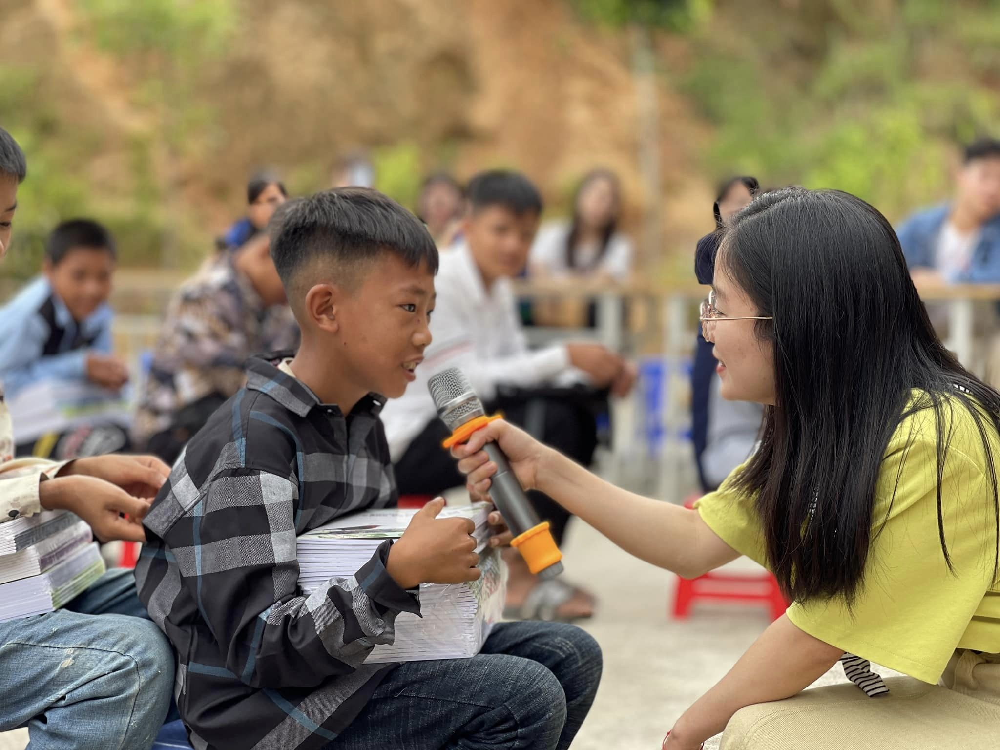

NGƯỜI NGUYỄN HUỆ CHỌN NGHỈ LỄ BẰNG MỘT HÀNH TRÌNH Ý NGHĨA : VỮNG BƯỚC EM TỚI TRƯỜNG

“Ta không được chọn nơi mình sinh ra nhưng ta được chọn cách mình sẽ sống”
Thầy cô và các bạn nhỏ trường PTDTBT THCS Tả Gia Khâu – Mường Khương, Lào Cai đón chúng tớ bằng những sự chân chất, thật thà, nụ cười hồn nhiên, đón tiếp nồng hậu; bằng sự bỡ ngỡ, thẹn thùng, cả niềm vui, ánh mắt háo hức, khi nhận được cuốn sách mới,… những điều nhỏ như vậy thôi nhưng lại đầy ấm áp!
Toàn bộ những cuốn SGK, đồ dùng học tập, sách truyện, đồ chơi,.. và cả những yêu thương của ngàn người Nguyễn Huệ gửi gắm đã được thầy trò nhà mình đồng hành cùng nhóm thiện nguyện “Chắp cánh những niềm vui”, “Ước mơ triệu cây xanh” tận tay trao cho các em nhỏ vùng cao trước thềm năm học mới.
Nhưng hành trình này đâu chỉ đến để cho đi mà chúng mình cũng nhận được rất nhiều năng lượng tích cực, bao trải nghiệm quý giá, tình yêu thương và cả những điều tử tế bé nhỏ. Để rồi, đi thật xa như vậy để là trở về với cuộc sống thường ngày mà vẫn duy trì những giá trị ấy, làm sao cho điều tử tế được lan tỏa và yêu thương luôn đầy ắp nơi tim.
Thầy cô và các bạn nhỏ trường PTDTBT THCS Tả Gia Khâu – Mường Khương, Lào Cai đón chúng tớ bằng những sự chân chất, thật thà, nụ cười hồn nhiên, đón tiếp nồng hậu; bằng sự bỡ ngỡ, thẹn thùng, cả niềm vui, ánh mắt háo hức, khi nhận được cuốn sách mới,… những điều nhỏ như vậy thôi nhưng lại đầy ấm áp!
Toàn bộ những cuốn SGK, đồ dùng học tập, sách truyện, đồ chơi,.. và cả những yêu thương của ngàn người Nguyễn Huệ gửi gắm đã được thầy trò nhà mình đồng hành cùng nhóm thiện nguyện “Chắp cánh những niềm vui”, “Ước mơ triệu cây xanh” tận tay trao cho các em nhỏ vùng cao trước thềm năm học mới.
Nhưng hành trình này đâu chỉ đến để cho đi mà chúng mình cũng nhận được rất nhiều năng lượng tích cực, bao trải nghiệm quý giá, tình yêu thương và cả những điều tử tế bé nhỏ. Để rồi, đi thật xa như vậy để là trở về với cuộc sống thường ngày mà vẫn duy trì những giá trị ấy, làm sao cho điều tử tế được lan tỏa và yêu thương luôn đầy ắp nơi tim.